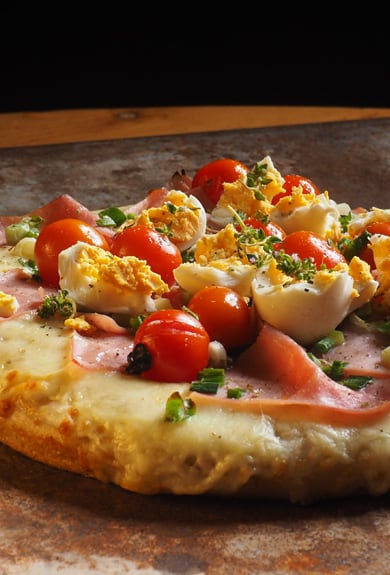
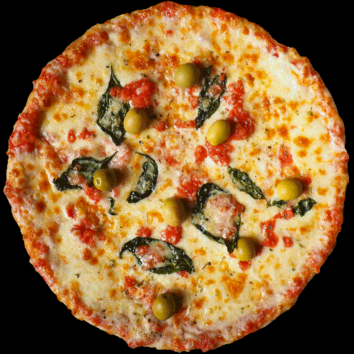
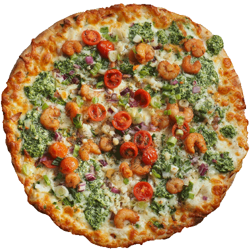
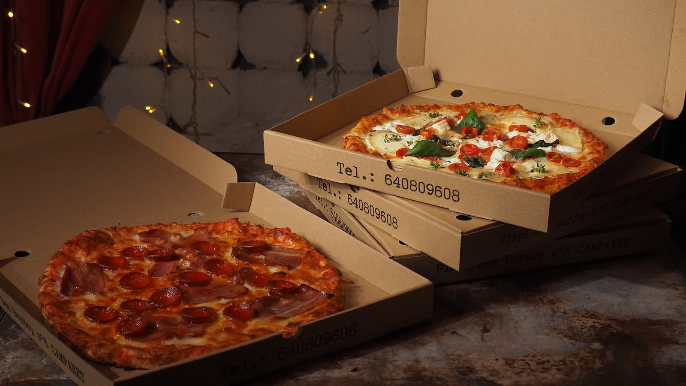
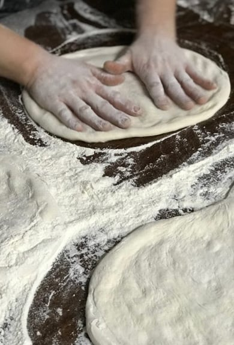

Adriana
Tomate, mozzarella, jamón crudo, rúcula fresca y tomate cherry. Una de las favoritas de la casa.
14,90 €
Recetas con alma argentina y raíces italianas, cocinadas en horno de leña en el corazón de Campanet. Ingredientes frescos y de proximidad, masa de fermentación lenta y opciones sin gluten y veganas.

Bacán nace de dos cocineros argentinos con raíces italianas y españolas. Nuestras nonnas preparaban docenas de pizzas y cada comida era una fiesta alrededor de la mesa. Hoy honramos ese legado en Campanet, al pie de la Serra de Tramuntana.
Cada pizza es de autor: masa de fermentación lenta, salsa de tomate elaborada con mimo, ingredientes frescos y de proximidad y el sabor inconfundible del horno de leña.
Una selección de nuestras pizzas de autor más queridas, además de picoteo argentino, cócteles y postres caseros. Cada receta tiene nombre propio y su propia historia.
Tomate, mozzarella, jamón crudo, rúcula fresca y tomate cherry. Una de las favoritas de la casa.
14,90 €
Combinación intensa de embutidos, mozzarella fundida y nuestra salsa de tomate de fermentación lenta.
13,90 €
Receta ligera y equilibrada para los amantes de los sabores frescos sobre masa fina y crujiente.
12,90 €
Nuestro homenaje gourmet, generosa y sabrosa, con ingredientes seleccionados al detalle.
15,90 €
La clásica argentina: masa al molde con abundante mozzarella, tomate y orégano. Pura tradición.
11,90 €
La receta de la abuela, con el sabor de siempre y el cariño de las pizzas de toda la vida.
13,50 €
Empanadas argentinas, tacos y nachos para empezar y compartir mientras llega tu pizza.
desde 3,50 €
La barra de Bacán: cócteles de autor y clásicos bien preparados para acompañar la velada.
desde 7,50 €
Postres caseros para cerrar con dulzura. Nuestro tiramisú es uno de los más aplaudidos.
desde 5,50 €Sin palabras, creo que son las mejores pizzas de Mallorca. Local acogedor y un servicio de diez.
Cada pizza recorre el mismo camino artesano: tiempo, manos y fuego de leña. Así nace el sabor de Bacán.
Fermentación lenta de varias horas para una masa ligera, digestiva y con carácter.
Tomate elaborado con mimo, base de cada receta, sin prisas ni atajos.
Productos frescos y de proximidad, seleccionados a diario para cada pizza de autor.
El toque final: el fuego de leña que sella el sabor y firma cada pizza de Bacán.
Terraza al atardecer con vistas a la Serra de Tramuntana, comedor acogedor y el aroma del horno de leña. Un sitio para venir con calma.





Reserva tu mesa y disfruta de nuestras pizzas de autor en el comedor o en la terraza con vistas a la montaña. Avísanos si necesitas opciones sin gluten o veganas y te las preparamos encantados.
Los fines de semana solemos llenarnos, así que te recomendamos reservar con antelación por WhatsApp o por teléfono.
Lunes y martes descansamos. El resto de la semana te esperamos para cenar y, los fines de semana, también a mediodía.
| Lunes | Cerrado |
| Martes | Cerrado |
| Miércoles | 18:00 — 22:45 |
| Jueves | 18:00 — 22:45 |
| Viernes | 18:00 — 22:45 |
| Sábado | 13:00 — 15:30 · 18:30 — 22:45 |
| Domingo | 13:00 — 15:30 · 18:30 — 22:45 |
Recomendamos reservar, sobre todo los fines de semana, ya que Bacán suele llenarse. Puedes reservar por WhatsApp o llamando al 640 80 96 08.
Sí. Elaboramos masa sin gluten y contamos con opciones veganas. Avísanos al reservar o al pedir para prepararte la mejor opción.
Sí. Todas nuestras pizzas se cuecen en horno de leña, sobre masa de fermentación lenta, con ingredientes frescos y de proximidad.
Estamos en la Plaça Son Bordoy, 6, 07310 Campanet (Mallorca), al pie de la Serra de Tramuntana. Tienes el mapa y las indicaciones en la sección de Ubicación.
Abrimos de miércoles a viernes en horario de cena (18:00 a 22:45) y los sábados y domingos a mediodía y noche. Lunes y martes permanecemos cerrados.
Estamos en la Plaça Son Bordoy de Campanet, al pie de la Tramuntana. Reserva por WhatsApp, teléfono o email.